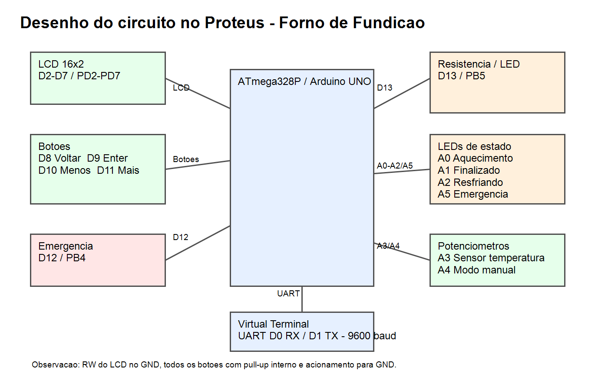
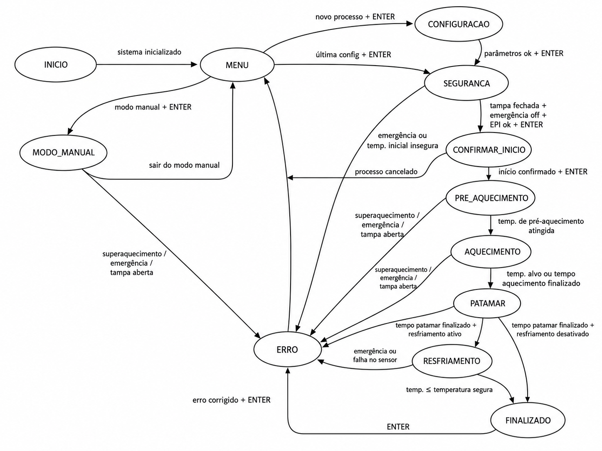

Perfis
| Perfil | Alvo | Modo |
|---|---|---|
| Alumínio | 660°C | Automático |
| Latão | 930°C | Automático |
| Personalizado | 50 em 50°C | Automático |
| Manual | A4 | Proporcional |
ATmega328P · C AVR · Proteus
Projeto didático com LCD 16x2, botões, UART, ADC, Timer1, máquina de estados, emergência e soft starter.


| Perfil | Alvo | Modo |
|---|---|---|
| Alumínio | 660°C | Automático |
| Latão | 930°C | Automático |
| Personalizado | 50 em 50°C | Automático |
| Manual | A4 | Proporcional |
| LED | Pino | Função |
|---|---|---|
| Aquecimento | A0 | Resistência ativa |
| Finalizado | A1 | Processo finalizado |
| Resfriando | A2 | Resfriamento natural |
| Emergência | A5 | Pisca em erro |
| Função | Arduino | ATmega328P |
|---|---|---|
| LCD RS/E/D4-D7 | D2-D7 | PD2-PD7 |
| Voltar/Enter/Menos/Mais | D8-D11 | PB0-PB3 |
| Emergência | D12 | PB4 |
| Resistência | D13 | PB5 |
| Sensor | A3 | ADC3 / PC3 |
| Potenciômetro manual | A4 | ADC4 / PC4 |